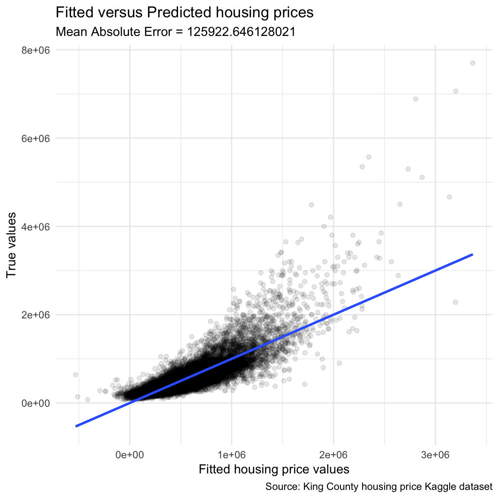
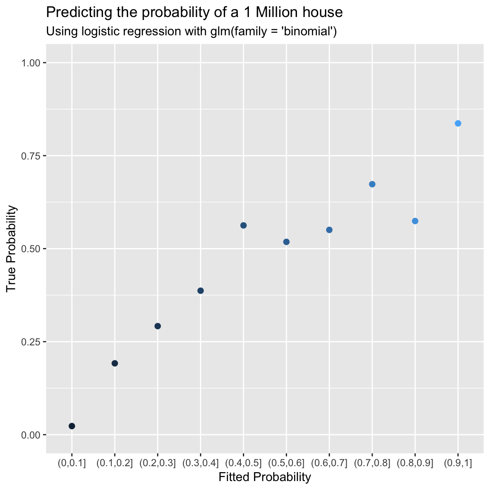

Statistics II
Introduction to R
Bern R Bootcamp

Bern R Bootcamp

Overview
In this practical you’ll do basic statistics in R. By the end of this practical you will know how to:
- Calculate regression analyses with
glm()andlm() - Explore statistical objects with
names(),summary(),print(),predict() - Run mixed-model and Bayesian regressions using the
lme4andBayesFactorpackages
Datasets
library(tidyverse)
kc_house <- read_csv("https://raw.githubusercontent.com/therbootcamp/BaselRBootcamp_2018July/master/_sessions/_data//baselrbootcamp_data/kc_house.csv")| File | Rows | Columns | Description |
|---|---|---|---|
| kc_house.csv | 21613 | 21 | House sale prices for King County between May 2014 and May 2015. |
Packages
| Package | Installation |
|---|---|
tidyverse |
install.packages("tidyverse") |
lubridate |
install.packages("lubridate") |
broom |
install.packages("broom") |
rsq |
install.packages("rsq") |
Glossary
Descriptive Statistics
| Function | Description |
|---|---|
table() |
Frequency table |
mean(), median(), mode() |
Measures of central tendency |
sd(), range(), var() |
Measures of variability |
max(), min() |
Extreme values |
summary() |
Several summary statistics |
Statistical Tests
| Function | Hypothesis Test |
|---|---|
t.test() |
One and two sample t-test |
cor.test() |
Correlation test |
glm(), lm() |
Generalized linear model and linear model |
Sampling Functions
| Function | Description | Additional Help |
|---|---|---|
sample() |
Draw a random sample of values from a vector | ?sample |
rnorm() |
Draw random values from a Normal distribution | ?rnorm() |
runif() |
Draw random values from a Uniform distribution | ?runif() |
Examples
# Examples of hypothesis tests on the diamonds -------------
library(tidyverse)
library(broom)
library(rsq)
# First few rows of the diamonds data
diamonds
# Descriptive statistics ------------------------
mean(diamonds$carat) # What is the mean carat?
median(diamonds$price) # What is the median price?
max(diamonds$depth) # What is the maximum depth?
table(diamonds$color) # How many observations for each color?
# 2-sample t- test ---------------------------
# Q: Is there a difference in the carats of color = E and color = I diamonds?
htest_B <- t.test(formula = carat ~ color, # DV ~ IV
alternative = "two.sided", # Two-sided test
data = diamonds, # The data
subset = color %in% c("E", "I")) # Compare Diet 1 and Diet 2
htest_B # Print result
# Correlation test -----------------------
# Q: Is there a correlation between carat and price?
htest_C <- cor.test(formula = ~ carat + price,
data = diamonds)
htest_C
# A: Yes. r = 0.92, t(53938) = 551.51, p < .001
# Regression ----------------------------
# Q: Create regression equation predicting price by carat, depth, table, and x
price_glm <- glm(formula = price ~ carat + depth + table + x,
data = diamonds)
# Print coefficients
price_glm$coefficients
# Tidy version
tidy(price_glm)
# Extract R-Squared
rsq(price_glm)
# -----
# Simulation
# ------
# 100 random samples from a normal distribution with mean = 0, sd = 1
samp_A <- rnorm(n = 100, mean = 0, sd = 1)
# 100 random samples from a Uniform distribution with bounds at 0, 10
samp_B <- runif(n = 100, min = 0, max = 10)
# Calculate descriptives
mean(samp_A)
sd(samp_A)
mean(samp_B)
sd(samp_B)
# Combine samples (plus tw new ones) in a tibble
my_sim <- tibble(A = samp_A,
B = samp_B,
C = rnorm(n = 100, mean = 0, sd = 1),
error = rnorm(n = 100, mean = 5, sd = 10))
# Add y, a linear function of A and B to my_sim
my_sim <- my_sim %>%
mutate(y = 3 * A -8 * B + error)
# Regress y on A, B and C
my_glm <- glm(y ~ A + B + C,
data = my_sim)
# Look at results!
tidy(my_glm)Tasks
A - Getting setup
- Open your
baselrbootcampR project. It should already have the folders1_Dataand2_Code. Make sure that all of the data files listed above are contained in the1_Datafolder
# Done!Open a new R script and save it as a new file called
statistics_practical.Rin the2_Codefolder. At the top of the script, using comments, write your name and the date. The, load the set of packages listed above withlibrary().For this practical, we’ll use the
kc_house.csvdata. This dataset contains house sale prices for King County, Washington. It includes homes sold between May 2014 and May 2015. Using the following template, load the data into R and store it as a new object calledkc_house.
kc_house <- read_csv(file = "XX")kc_house <- read_csv(file = "1_Data/kc_house.csv")- Using
print(),summary(), andhead(), explore the data to make sure it was loaded correctly.
kc_house# A tibble: 21,613 x 21
id date price bedrooms bathrooms sqft_living sqft_lot
<chr> <dttm> <dbl> <int> <dbl> <int> <int>
1 7129… 2014-10-13 00:00:00 2.22e5 3 1 1180 5650
2 6414… 2014-12-09 00:00:00 5.38e5 3 2.25 2570 7242
3 5631… 2015-02-25 00:00:00 1.80e5 2 1 770 10000
4 2487… 2014-12-09 00:00:00 6.04e5 4 3 1960 5000
5 1954… 2015-02-18 00:00:00 5.10e5 3 2 1680 8080
6 7237… 2014-05-12 00:00:00 1.23e6 4 4.5 5420 101930
7 1321… 2014-06-27 00:00:00 2.58e5 3 2.25 1715 6819
8 2008… 2015-01-15 00:00:00 2.92e5 3 1.5 1060 9711
9 2414… 2015-04-15 00:00:00 2.30e5 3 1 1780 7470
10 3793… 2015-03-12 00:00:00 3.23e5 3 2.5 1890 6560
# ... with 21,603 more rows, and 14 more variables: floors <dbl>,
# waterfront <int>, view <int>, condition <int>, grade <int>,
# sqft_above <int>, sqft_basement <int>, yr_built <int>,
# yr_renovated <int>, zipcode <int>, lat <dbl>, long <dbl>,
# sqft_living15 <int>, sqft_lot15 <int>summary(kc_house) id date price
Length:21613 Min. :2014-05-02 00:00:00 Min. : 75000
Class :character 1st Qu.:2014-07-22 00:00:00 1st Qu.: 321950
Mode :character Median :2014-10-16 00:00:00 Median : 450000
Mean :2014-10-29 04:38:01 Mean : 540088
3rd Qu.:2015-02-17 00:00:00 3rd Qu.: 645000
Max. :2015-05-27 00:00:00 Max. :7700000
bedrooms bathrooms sqft_living sqft_lot
Min. : 0.0 Min. :0.00 Min. : 290 Min. : 520
1st Qu.: 3.0 1st Qu.:1.75 1st Qu.: 1427 1st Qu.: 5040
Median : 3.0 Median :2.25 Median : 1910 Median : 7618
Mean : 3.4 Mean :2.11 Mean : 2080 Mean : 15107
3rd Qu.: 4.0 3rd Qu.:2.50 3rd Qu.: 2550 3rd Qu.: 10688
Max. :33.0 Max. :8.00 Max. :13540 Max. :1651359
floors waterfront view condition
Min. :1.00 Min. :0.000 Min. :0.00 Min. :1.00
1st Qu.:1.00 1st Qu.:0.000 1st Qu.:0.00 1st Qu.:3.00
Median :1.50 Median :0.000 Median :0.00 Median :3.00
Mean :1.49 Mean :0.008 Mean :0.23 Mean :3.41
3rd Qu.:2.00 3rd Qu.:0.000 3rd Qu.:0.00 3rd Qu.:4.00
Max. :3.50 Max. :1.000 Max. :4.00 Max. :5.00
grade sqft_above sqft_basement yr_built
Min. : 1.00 Min. : 290 Min. : 0 Min. :1900
1st Qu.: 7.00 1st Qu.:1190 1st Qu.: 0 1st Qu.:1951
Median : 7.00 Median :1560 Median : 0 Median :1975
Mean : 7.66 Mean :1788 Mean : 292 Mean :1971
3rd Qu.: 8.00 3rd Qu.:2210 3rd Qu.: 560 3rd Qu.:1997
Max. :13.00 Max. :9410 Max. :4820 Max. :2015
yr_renovated zipcode lat long
Min. : 0 Min. :98001 Min. :47.2 Min. :-122
1st Qu.: 0 1st Qu.:98033 1st Qu.:47.5 1st Qu.:-122
Median : 0 Median :98065 Median :47.6 Median :-122
Mean : 84 Mean :98078 Mean :47.6 Mean :-122
3rd Qu.: 0 3rd Qu.:98118 3rd Qu.:47.7 3rd Qu.:-122
Max. :2015 Max. :98199 Max. :47.8 Max. :-121
sqft_living15 sqft_lot15
Min. : 399 Min. : 651
1st Qu.:1490 1st Qu.: 5100
Median :1840 Median : 7620
Mean :1987 Mean : 12768
3rd Qu.:2360 3rd Qu.: 10083
Max. :6210 Max. :871200 head(kc_house)# A tibble: 6 x 21
id date price bedrooms bathrooms sqft_living sqft_lot
<chr> <dttm> <dbl> <int> <dbl> <int> <int>
1 7129… 2014-10-13 00:00:00 2.22e5 3 1 1180 5650
2 6414… 2014-12-09 00:00:00 5.38e5 3 2.25 2570 7242
3 5631… 2015-02-25 00:00:00 1.80e5 2 1 770 10000
4 2487… 2014-12-09 00:00:00 6.04e5 4 3 1960 5000
5 1954… 2015-02-18 00:00:00 5.10e5 3 2 1680 8080
6 7237… 2014-05-12 00:00:00 1.23e6 4 4.5 5420 101930
# ... with 14 more variables: floors <dbl>, waterfront <int>, view <int>,
# condition <int>, grade <int>, sqft_above <int>, sqft_basement <int>,
# yr_built <int>, yr_renovated <int>, zipcode <int>, lat <dbl>,
# long <dbl>, sqft_living15 <int>, sqft_lot15 <int>B - Descriptive statistics
- What was the mean price (
price) of all houses?
mean(kc_house$price)[1] 540088- What was the median price (
price) of all houses?
median(kc_house$price)[1] 450000- What was the standard deviation price (
price) of all houses?
sd(kc_house$price)[1] 367127- What were the minimum and maximum prices? Try using
min(),max(), andrange()
range(kc_house$price)[1] 75000 7700000- How many houses were on the waterfront (
waterfront) and how many were not? (Hint: usetable())
table(kc_house$waterfront)
0 1
21450 163 C - T tests with t.test()
- Do houses on the waterfront sell for more than those not on the waterfront? Answer this by creating an object called
water_htestwhich contains the result of the appropriate t-test usingt.test(). Use the following template
water_htest <- t.test(formula = XX ~ XX,
data = XX)water_htest <- t.test(formula = price ~ waterfront,
data = kc_house)- Print your
water_htestobject to see summary results
water_htest
Welch Two Sample t-test
data: price by waterfront
t = -10, df = 200, p-value <2e-16
alternative hypothesis: true difference in means is not equal to 0
95 percent confidence interval:
-1303662 -956963
sample estimates:
mean in group 0 mean in group 1
531564 1661876 - Apply the
summary()function towater_htest. Do you see anything new or important?
summary(water_htest) Length Class Mode
statistic 1 -none- numeric
parameter 1 -none- numeric
p.value 1 -none- numeric
conf.int 2 -none- numeric
estimate 2 -none- numeric
null.value 1 -none- numeric
alternative 1 -none- character
method 1 -none- character
data.name 1 -none- character- Look at the names of the
water_htestwithnames(). What are the named elements of the object?
names(water_htest)[1] "statistic" "parameter" "p.value" "conf.int" "estimate"
[6] "null.value" "alternative" "method" "data.name" - Using the
$operator, print the exact test statistic of the t-test.
water_htest$statistic t
-12.9 - Again using the
$operator, print the exact p-value of the test.
water_htest$p.value[1] 1.38e-26- Use the
tidy()function to return a dataframe containing the main results of the test.
tidy(water_htest)# A tibble: 1 x 10
estimate estimate1 estimate2 statistic p.value parameter conf.low
<dbl> <dbl> <dbl> <dbl> <dbl> <dbl> <dbl>
1 -1.13e6 531564. 1661876. -12.9 1.38e-26 162. -1.30e6
# ... with 3 more variables: conf.high <dbl>, method <chr>,
# alternative <chr>- Do houses on the waterfront also tend to have more (or less) living space (
sqft_living)? Answer this by conducting the appropriate t-test and going through the same steps you did in the previous question
D - Correlation tests with cor.test()
- Do houses built in later years tend to sell for more than older houses? Answer this by creating an object called
time_htestwhich contains the result of the appropriate correlation test usingcor.test()and the columnsyr_builtandprice. Use the following template:
# Note: cor.terst() is the only function (we know of)
# that uses formulas in the strange format
# formula = ~ X + Y instead of formula = Y ~ X
time_htest <- cor.test(formula = ~ XX + XX,
data = XX)time_htest <- cor.test(formula = ~ yr_built + price,
data = kc_house)- Print your
time_htestobject to see summary results
time_htest
Pearson's product-moment correlation
data: yr_built and price
t = 8, df = 20000, p-value = 2e-15
alternative hypothesis: true correlation is not equal to 0
95 percent confidence interval:
0.0407 0.0673
sample estimates:
cor
0.054 - Apply the
summary()function totime_htest. Do you see anything new or important?
summary(time_htest) Length Class Mode
statistic 1 -none- numeric
parameter 1 -none- numeric
p.value 1 -none- numeric
estimate 1 -none- numeric
null.value 1 -none- numeric
alternative 1 -none- character
method 1 -none- character
data.name 1 -none- character
conf.int 2 -none- numeric - Look at the names of the
time_htestwithnames(). What are the named elements of the object?
names(time_htest)[1] "statistic" "parameter" "p.value" "estimate" "null.value"
[6] "alternative" "method" "data.name" "conf.int" - Using the
$operator, print the exact correlation of the test (Hint: it’s called “estimate”)
time_htest$estimate cor
0.054 - Again using the
$operator, print the exact p-value of the test.
time_htest$p.value[1] 1.93e-15- Use the
tidy()function to return a dataframe containing the main results of the test.
tidy(time_htest)# A tibble: 1 x 8
estimate statistic p.value parameter conf.low conf.high method
<dbl> <dbl> <dbl> <int> <dbl> <dbl> <chr>
1 0.0540 7.95 1.93e-15 21611 0.0407 0.0673 Pears…
# ... with 1 more variable: alternative <chr>- Do houses in in better overall condition
conditiontend to sell at higher prices than those in worse condition? Answer this by conducting the appropriate correlation test and going through the same steps you did in the previous question.
condition_htest <- cor.test(formula = ~ condition + price,
data = kc_house)
condition_htest
Pearson's product-moment correlation
data: condition and price
t = 5, df = 20000, p-value = 9e-08
alternative hypothesis: true correlation is not equal to 0
95 percent confidence interval:
0.0230 0.0497
sample estimates:
cor
0.0364 E - Linear Regression with lm() and glm()
- In a previous question, you used a correlation test to see if houses built in later years
yr_builttend to sell for more than older houses. Now let’s repeat the same analysis using a regression analysis withlm(). Do to this, use the following template:
time_lm <- lm(formula = XX ~ XX,
data = XX)time_lm <- lm(formula = price ~ yr_built,
data = kc_house)- Print your
time_lmobject to see the main results.
time_lm
Call:
lm(formula = price ~ yr_built, data = kc_house)
Coefficients:
(Intercept) yr_built
-790478 675 - Use the
tidy()function (from thebroompackage) to return a dataframe containing the main results of the test.
tidy(time_lm)# A tibble: 2 x 5
term estimate std.error statistic p.value
<chr> <dbl> <dbl> <dbl> <dbl>
1 (Intercept) -790478. 167350. -4.72 2.33e- 6
2 yr_built 675. 84.9 7.95 1.93e-15- How does the p-value of this test compare to what you got in the previous question when you used
cor.test()?
# Same!- Which of the variables
bedrooms,bathrooms, andsqft_livingpredict housing price? Answer this by conducting the appropriate regression analysis usinglm()and assigning the result to an objectprice_lm. Use the following template:
price_lm <- lm(formula = XX ~ XX + XX + XX,
data = XX)price_lm <- lm(formula = price ~ bedrooms + bathrooms + sqft_living,
data = kc_house)- Print your
price_lmobject to see the main results.
price_lm
Call:
lm(formula = price ~ bedrooms + bathrooms + sqft_living, data = kc_house)
Coefficients:
(Intercept) bedrooms bathrooms sqft_living
74847 -57861 7933 309 - Apply the
summary()function toprice_lm. Do you see anything new or important?
summary(price_lm)
Call:
lm(formula = price ~ bedrooms + bathrooms + sqft_living, data = kc_house)
Residuals:
Min 1Q Median 3Q Max
-1642456 -144268 -22821 102461 4180678
Coefficients:
Estimate Std. Error t value Pr(>|t|)
(Intercept) 74847.14 6913.67 10.83 <2e-16 ***
bedrooms -57860.89 2334.61 -24.78 <2e-16 ***
bathrooms 7932.71 3510.56 2.26 0.024 *
sqft_living 309.39 3.09 100.23 <2e-16 ***
---
Signif. codes: 0 '***' 0.001 '**' 0.01 '*' 0.05 '.' 0.1 ' ' 1
Residual standard error: 258000 on 21609 degrees of freedom
Multiple R-squared: 0.507, Adjusted R-squared: 0.507
F-statistic: 7.41e+03 on 3 and 21609 DF, p-value: <2e-16- Look at the names of the
price_lmwithnames(). What are the named elements of the object?
names(price_lm) [1] "coefficients" "residuals" "effects" "rank"
[5] "fitted.values" "assign" "qr" "df.residual"
[9] "xlevels" "call" "terms" "model" - Using the
$operator, print a vector of the estimated coefficients of the analysis.
price_lm$coefficients(Intercept) bedrooms bathrooms sqft_living
74847 -57861 7933 309 - Use the
tidy()function (from thebroompackage) to return a dataframe containing the main results of the test.
tidy(price_lm)# A tibble: 4 x 5
term estimate std.error statistic p.value
<chr> <dbl> <dbl> <dbl> <dbl>
1 (Intercept) 74847. 6914. 10.8 3.05e- 27
2 bedrooms -57861. 2335. -24.8 9.81e-134
3 bathrooms 7933. 3511. 2.26 2.39e- 2
4 sqft_living 309. 3.09 100. 0. - Use the
rsq()function (from thersqpackage) to obtain the R-squared value. Does this match what you saw in your previous outputs?
rsq(price_lm)[1] 0.507- Using the following template, create a new model called
everything_lmthat predicts housing prices based on all predictors inkc_houseexcept foridanddate(idis meaningless and date shouldn’t matter). Use the following template. Note that to include all predictors, we’ll use theformula = y ~.shortcut. We’ll also remove id and date from the dataset usingselect()before running the analysis.
everything_lm <- lm(formula = XX ~.,
data = kc_house %>%
select(-id, -date))everything_lm <- lm(formula = price ~.,
data = kc_house %>%
select(-id, -date))- Print your
everything_lmobject to see the main results.
everything_lm
Call:
lm(formula = price ~ ., data = kc_house %>% select(-id, -date))
Coefficients:
(Intercept) bedrooms bathrooms sqft_living sqft_lot
6.69e+06 -3.58e+04 4.11e+04 1.50e+02 1.29e-01
floors waterfront view condition grade
6.69e+03 5.83e+05 5.29e+04 2.64e+04 9.59e+04
sqft_above sqft_basement yr_built yr_renovated zipcode
3.11e+01 NA -2.62e+03 1.98e+01 -5.82e+02
lat long sqft_living15 sqft_lot15
6.03e+05 -2.15e+05 2.17e+01 -3.83e-01 - Apply the
summary()function toeverything_lm. Do you see anything new or important?
summary(everything_lm)
Call:
lm(formula = price ~ ., data = kc_house %>% select(-id, -date))
Residuals:
Min 1Q Median 3Q Max
-1291725 -99229 -9739 77583 4333222
Coefficients: (1 not defined because of singularities)
Estimate Std. Error t value Pr(>|t|)
(Intercept) 6.69e+06 2.93e+06 2.28 0.0225 *
bedrooms -3.58e+04 1.89e+03 -18.91 < 2e-16 ***
bathrooms 4.11e+04 3.25e+03 12.65 < 2e-16 ***
sqft_living 1.50e+02 4.39e+00 34.23 < 2e-16 ***
sqft_lot 1.29e-01 4.79e-02 2.68 0.0073 **
floors 6.69e+03 3.60e+03 1.86 0.0628 .
waterfront 5.83e+05 1.74e+04 33.58 < 2e-16 ***
view 5.29e+04 2.14e+03 24.71 < 2e-16 ***
condition 2.64e+04 2.35e+03 11.22 < 2e-16 ***
grade 9.59e+04 2.15e+03 44.54 < 2e-16 ***
sqft_above 3.11e+01 4.36e+00 7.14 9.7e-13 ***
sqft_basement NA NA NA NA
yr_built -2.62e+03 7.27e+01 -36.06 < 2e-16 ***
yr_renovated 1.98e+01 3.66e+00 5.42 6.0e-08 ***
zipcode -5.82e+02 3.30e+01 -17.66 < 2e-16 ***
lat 6.03e+05 1.07e+04 56.15 < 2e-16 ***
long -2.15e+05 1.31e+04 -16.35 < 2e-16 ***
sqft_living15 2.17e+01 3.45e+00 6.29 3.3e-10 ***
sqft_lot15 -3.83e-01 7.33e-02 -5.22 1.8e-07 ***
---
Signif. codes: 0 '***' 0.001 '**' 0.01 '*' 0.05 '.' 0.1 ' ' 1
Residual standard error: 201000 on 21595 degrees of freedom
Multiple R-squared: 0.7, Adjusted R-squared: 0.7
F-statistic: 2.96e+03 on 17 and 21595 DF, p-value: <2e-16- Using the
$operator, print a vector of the estimated coefficients of the analysis. Are the beta values for bedrooms, bathrooms, and sqft_living different from what you got in your previous analysisprice_lm?
everything_lm$coefficients (Intercept) bedrooms bathrooms sqft_living sqft_lot
6.69e+06 -3.58e+04 4.11e+04 1.50e+02 1.29e-01
floors waterfront view condition grade
6.69e+03 5.83e+05 5.29e+04 2.64e+04 9.59e+04
sqft_above sqft_basement yr_built yr_renovated zipcode
3.11e+01 NA -2.62e+03 1.98e+01 -5.82e+02
lat long sqft_living15 sqft_lot15
6.03e+05 -2.15e+05 2.17e+01 -3.83e-01 - Use the
tidy()function to return a dataframe containing the main results of the test.
tidy(everything_lm)# A tibble: 18 x 5
term estimate std.error statistic p.value
<chr> <dbl> <dbl> <dbl> <dbl>
1 (Intercept) 6690325. 2931485. 2.28 2.25e- 2
2 bedrooms -35767. 1892. -18.9 4.46e- 79
3 bathrooms 41144. 3254. 12.6 1.60e- 36
4 sqft_living 150. 4.39 34.2 4.47e-250
5 sqft_lot 0.129 0.0479 2.68 7.29e- 3
6 floors 6690. 3596. 1.86 6.28e- 2
7 waterfront 582960. 17360. 33.6 5.01e-241
8 view 52871. 2140. 24.7 6.54e-133
9 condition 26386. 2351. 11.2 3.87e- 29
10 grade 95890. 2153. 44.5 0.
11 sqft_above 31.1 4.36 7.14 9.71e- 13
12 yr_built -2620. 72.7 -36.1 1.39e-276
13 yr_renovated 19.8 3.66 5.42 6.03e- 8
14 zipcode -582. 33.0 -17.7 2.78e- 69
15 lat 602748. 10735. 56.1 0.
16 long -214730. 13134. -16.3 1.01e- 59
17 sqft_living15 21.7 3.45 6.29 3.26e- 10
18 sqft_lot15 -0.383 0.0733 -5.22 1.78e- 7- Use the
rsq()function (from thersqpackage) to obtain the R-squared value. How does this R-squared value compare to what you got in your previous regressionprice_lm?
rsq(everything_lm)[1] 0.7- How well did the
everything_lmmodel fit the actual housing prices? We can answer this by calculating the average difference between the fitted values and the true values directly. Using the following template, make this calculation. What do you find is the mean absolute difference between the fitted housing prices and the true prices?
# True housing prices
prices_true <- kc_house$XX
# Model fits (fitted.values)
prices_fitted <- everything_lm$XX
# Calculate absolute error between fitted and true values
abs_error <- abs(XX - XX)
# Calculate mean absolute error
mae <- mean(XX)
# Print the result!
mae# True housing prices
prices_true <- kc_house$price
# Model fits (fitted.values)
prices_fitted <- everything_lm$fitted.values
# Calculate absolute error between fitted and true values
abs_error <- abs(prices_true - prices_fitted)
# Calculate mean absolute error
mae <- mean(abs_error)
# Print the result!
mae[1] 125923- Using the following template, create a scatterplot showing the relationship between the fitted values of the
everything_lmobject and the true prices.
# Create dataframe containing fitted and true prices
prices_results <- tibble(truth = XX,
fitted = XX)
# Create scatterplot
ggplot(data = prices_results,
aes(x = fitted, y = truth)) +
geom_point(alpha = .1) +
geom_smooth(method = 'lm') +
labs(title = "Fitted versus Predicted housing prices",
subtitle = paste0("Mean Absolute Error = ", mae),
caption = "Source: King County housing price Kaggle dataset",
x = "Fitted housing price values",
y = 'True values') +
theme_minimal()# Create dataframe containing fitted and true prices
prices_results <- tibble(truth = kc_house$price,
fitted = everything_lm$fitted.values)
# Create scatterplot
ggplot(data = prices_results,
aes(x = fitted, y = truth)) +
geom_point(alpha = .1) +
geom_smooth(method = 'lm') +
labs(title = "Fitted versus Predicted housing prices",
subtitle = paste0("Mean Absolute Error = ", mae),
caption = "Source: King County housing price Kaggle dataset",
x = "Fitted housing price values",
y = 'True values') +
theme_minimal()
F - Logistic regression with glm(family = ‘binomial’)
- In the next set of analyses, we’ll use logistic regression to predict whether or not a house will sell for over $1,000,000. First, we’ll need to create a new binary variable in the
kc_housecalledmillionthat is 1 when the price is over 1 million, and 0 when it is not. Run the following code to create this new variable
# Create a new binary variable called million that
# indicates when houses sell for more than 1 million
# Note: 1e6 is a shortcut for 1000000
kc_house <- kc_house %>%
mutate(million = price > 1e6)- Using the following template, use the
glm()function to conduct a logistic regression to see which of the variablesbedrooms,bathrooms,floors,waterfront,yr_builtpredict whether or not a house will sell for over 1 Million. Be sure to include the argumentfamily = 'binomial'to tellglm()that we are conducting a logistic regression analysis.
# Logistic regression analysis predicting which houses will sell for
# more than 1 Million
million_glm <- glm(formula = XX ~ XX + XX + XX + XX + XX,
data = kc_house,
family = "XX")million_glm <- glm(formula = million ~ bedrooms + bathrooms + floors + waterfront + yr_built,
family = "binomial", # Logistic regression
data = kc_house)- Print your
million_glmobject to see the main results.
million_glm
Call: glm(formula = million ~ bedrooms + bathrooms + floors + waterfront +
yr_built, family = "binomial", data = kc_house)
Coefficients:
(Intercept) bedrooms bathrooms floors waterfront
27.9298 0.0952 2.0412 0.4253 3.2701
yr_built
-0.0187
Degrees of Freedom: 21612 Total (i.e. Null); 21607 Residual
Null Deviance: 10700
Residual Deviance: 7390 AIC: 7400- Apply the
summary()function tomillion_glm.
summary(million_glm)
Call:
glm(formula = million ~ bedrooms + bathrooms + floors + waterfront +
yr_built, family = "binomial", data = kc_house)
Deviance Residuals:
Min 1Q Median 3Q Max
-3.918 -0.308 -0.218 -0.114 4.094
Coefficients:
Estimate Std. Error z value Pr(>|z|)
(Intercept) 27.92982 2.15221 12.98 < 2e-16 ***
bedrooms 0.09524 0.03452 2.76 0.0058 **
bathrooms 2.04122 0.05496 37.14 < 2e-16 ***
floors 0.42525 0.06898 6.16 7.1e-10 ***
waterfront 3.27013 0.21185 15.44 < 2e-16 ***
yr_built -0.01867 0.00112 -16.74 < 2e-16 ***
---
Signif. codes: 0 '***' 0.001 '**' 0.01 '*' 0.05 '.' 0.1 ' ' 1
(Dispersion parameter for binomial family taken to be 1)
Null deviance: 10714.3 on 21612 degrees of freedom
Residual deviance: 7391.1 on 21607 degrees of freedom
AIC: 7403
Number of Fisher Scoring iterations: 7- Using the
$operator, print a vector of the estimated beta values (coefficients) of the analysis.
million_glm$coefficients(Intercept) bedrooms bathrooms floors waterfront yr_built
27.9298 0.0952 2.0412 0.4253 3.2701 -0.0187 - Use the
tidy()function to return a dataframe containing the main results of the test.
tidy(million_glm)# A tibble: 6 x 5
term estimate std.error statistic p.value
<chr> <dbl> <dbl> <dbl> <dbl>
1 (Intercept) 27.9 2.15 13.0 1.65e- 38
2 bedrooms 0.0952 0.0345 2.76 5.80e- 3
3 bathrooms 2.04 0.0550 37.1 6.00e-302
4 floors 0.425 0.0690 6.16 7.06e- 10
5 waterfront 3.27 0.212 15.4 9.35e- 54
6 yr_built -0.0187 0.00112 -16.7 7.17e- 63- You can get the fitted probability predictions that each house will sell for more than 1 Million by accessing the vector
million_glm$fitted.values. Using this vector, calculate the average probability that houses will sell for more than 1 Million (hint: just take the mean!)
mean(million_glm$fitted.values)[1] 0.0678- Using the following code, create a data frame showing the relationship between the fitted probability that a house sells for over 1 Million and the true probability:
# Just run it!
million_fit <- tibble(pred_million = million_glm$fitted.values,
true_million = kc_house$million) %>%
mutate(fitted_cut = cut(pred_million, breaks = seq(0, 1, .1))) %>%
group_by(fitted_cut) %>%
summarise(true_prob = mean(true_million))
million_fit# Just run it!
million_fit <- tibble(pred_million = million_glm$fitted.values,
true_million = kc_house$million) %>%
mutate(fitted_cut = cut(pred_million, breaks = seq(0, 1, .1))) %>%
group_by(fitted_cut) %>%
summarise(true_prob = mean(true_million))
million_fit# A tibble: 10 x 2
fitted_cut true_prob
<fct> <dbl>
1 (0,0.1] 0.0231
2 (0.1,0.2] 0.192
3 (0.2,0.3] 0.292
4 (0.3,0.4] 0.387
5 (0.4,0.5] 0.562
6 (0.5,0.6] 0.518
7 (0.6,0.7] 0.550
8 (0.7,0.8] 0.673
9 (0.8,0.9] 0.574
10 (0.9,1] 0.837 - Now plot the results using the following code:
# Just run it!
ggplot(million_fit,
aes(x = fitted_cut, y = true_prob, col = as.numeric(fitted_cut))) +
geom_point(size = 2) +
labs(x = "Fitted Probability",
y = "True Probability",
title = "Predicting the probability of a 1 Million house",
subtitle = "Using logistic regression with glm(family = 'binomial')") +
scale_y_continuous(limits = c(0, 1)) +
guides(col = FALSE)# Just run it!
ggplot(million_fit,
aes(x = fitted_cut, y = true_prob, col = as.numeric(fitted_cut))) +
geom_point(size = 2) +
labs(x = "Fitted Probability",
y = "True Probability",
title = "Predicting the probability of a 1 Million house",
subtitle = "Using logistic regression with glm(family = 'binomial')") +
scale_y_continuous(limits = c(0, 1)) +
guides(col = FALSE)
G - Using predict() to predict new values
- Your friend Donald just bought a house whose building records have been lost. She wants to know what year her house was likely built. Help Donald figure out when his house was built by conducting the appropriate regression analysis, and then using the specifics of his house to predict the year that his house was built using the
predict()function. You know that his house is on the waterfront, has 3 bedrooms, 2 floors and has a condition of 4. The following block of code may help you!
# Create regression model predicting year (yr_built)
year_lm <- lm(formula = XX ~ XX + XX + XX + XX,
data = XX)
# Define Donald's House
DonaldsHouse <- tibble(waterfront = X,
bedrooms = X,
floors = X,
condition = X)
# Predict the hear of donald's house
predict(object = year_lm,
newdata = DonaldsHouse)# Create regression model predicting year (yr_built)
year_lm <- lm(formula = yr_built ~ waterfront + bedrooms + floors + condition,
data = kc_house)
# Define Donald's House
DonaldsHouse <- tibble(waterfront = 1,
bedrooms = 3,
floors = 2,
condition = 4)
# Predict the hear of donald's house
predict(object = year_lm,
newdata = DonaldsHouse) 1
1964 X - Advanced
- Which variables in the dataset significantly predict the grade of a house? Answer this with a regression analysis.
grade_lm <- lm(formula = grade ~ .,
data = kc_house %>%
select(-id, -date))
tidy(grade_lm)# A tibble: 19 x 5
term estimate std.error statistic p.value
<chr> <dbl> <dbl> <dbl> <dbl>
1 (Intercept) -1.10e+2 8.84 -12.4 2.15e- 35
2 price 8.77e-7 0.0000000239 36.7 1.66e-286
3 bedrooms -7.26e-2 0.00575 -12.6 2.02e- 36
4 bathrooms 7.35e-2 0.00987 7.45 9.51e- 14
5 sqft_living 2.14e-4 0.0000135 15.8 3.61e- 56
6 sqft_lot 2.97e-7 0.000000145 2.05 4.06e- 2
7 floors 1.29e-1 0.0109 11.9 2.04e- 32
8 waterfront -6.91e-1 0.0537 -12.9 1.11e- 37
9 view 2.97e-2 0.00658 4.52 6.20e- 6
10 condition 3.22e-3 0.00714 0.451 6.52e- 1
11 sqft_above 2.39e-4 0.0000131 18.2 1.09e- 73
12 yr_built 9.15e-3 0.000218 42.1 0.
13 yr_renovated 3.86e-5 0.0000111 3.49 4.82e- 4
14 zipcode 2.05e-5 0.000101 0.204 8.39e- 1
15 lat 2.24e-1 0.0353 6.34 2.29e- 10
16 long -6.93e-1 0.0397 -17.4 1.50e- 67
17 sqft_living15 4.00e-4 0.0000101 39.7 0.
18 sqft_lot15 -4.94e-7 0.000000222 -2.23 2.61e- 2
19 millionTRUE 1.04e-3 0.0247 0.0420 9.66e- 1- Is there an interaction between waterfront and year built (
yr_built) on price? In other words, is the relationship between year built and price the same for homes on the waterfront and homes not on the waterfront? Answer this by conducting the appropriate regression analysis and interpret the results. Note: to include an interaction in a model, use the formulay ~ X1 * X2instead ofy ~ X1 + X2.
int_lm <- lm(formula = price ~ yr_built * waterfront,
data = kc_house)
tidy(int_lm)# A tibble: 4 x 5
term estimate std.error statistic p.value
<chr> <dbl> <dbl> <dbl> <dbl>
1 (Intercept) -777635. 161032. -4.83 1.38e- 6
2 yr_built 664. 81.7 8.13 4.49e-16
3 waterfront -27465838. 1950333. -14.1 7.67e-45
4 yr_built:waterfront 14577. 994. 14.7 1.79e-48- How well can a regression analysis based on houses sold in 2014 predict housing costs in the 2015? To answer this we’ll create a regression model based on houses sold in 2014 and then use that model to predict the prices of houses sold in 2015. To start, we’ll need to create two new dataframes
kc_house_2014andkc_house_2015. Run the code in the following chunk to do this.
# Just run it!
# Add year_sold to kc_house
kc_house <- kc_house %>%
mutate(year_sold = year(ymd(date)))
# Create kc_house_2014,
# Only houses sold in 2014
kc_house_2014 <- kc_house %>%
filter(year_sold == 2014)
# Create kc_house_2015,
# Only houses sold in 2015
kc_house_2015 <- kc_house %>%
filter(year_sold == 2015)- Create a regression model called
price_2014_lmthat models housing prices in 2014 using only thekc_house_2014data. Note that you may wish to exclude some variables such asid,date,millionandyear_sold.
# on your own!- Create a regression model called
price_2015_lmthat models housing prices in 2015 using only thekc_house_2015data. Include the same exclusion and transformation criterion you used in the previous question.
# on your own!- Explore and compare the two models, do they look very similar? Very different?
# on your own!- Calculate the mean absolute error of each model applied to the dataset in which they were created. That is, what was the mean absolute fitted error of each model?
# on your own!- Using
predict(), predict the 2015 housing data based on theprice_2014_lmmodel.
# on your own!- Calculate the mean absolute error of the
price_2014_lmmodel when applied to the 2015 data. How different was the mean error compared to the mean fitting error of theprice_2015_lmmodel?
# on your own!Generating random samples from distributions
You can easily generate random samples from statistical distributions in R. To see all of them, run
?distributions. For example, to generate samples from the well known Normal distribution, you can usernorm(). Look at the help menu forrnorm()to see its arguments.Let’s explore the
rnorm()function. Usingrnorm(), create a new objectsamp_100which is 100 samples from a Normal distribution with mean 10 and standard deviation 5. Print the object to see what the elements look like. What should the mean and standard deviation of this sample? be? Test it by evaluating its mean and standard deviation directly using the appropriate functions. Then, do a one-sample t-test on this sample against the null hypothesis that the true mean is 10. What are the results? Use the following code template to help!
# Generate 100 samples from a Normal distribution with mean = 10 and sd = 5
samp_100 <- rnorm(n = XX, mean = XX, sd = XX)
# Print result
samp_100
# Calcultae sample mean and standard deviation.
mean(XX)
sd(XX)
t.test(x = XX, # Vector of values
mu = XX) # Mean under null hypothesis# Generate 100 samples from a Normal distribution with mean = 100 and sd = 5
samp_100 <- rnorm(n = 100, mean = 10, sd = 5)
# Print result
samp_100 [1] 7.7888 10.0773 9.2699 13.3501 7.8260 13.0419 11.7887 11.2969
[9] 7.2328 6.6037 6.2429 10.5957 11.5859 9.7823 15.9011 4.2438
[17] 5.7196 2.6510 22.6039 8.7623 18.6934 12.5741 11.7790 6.8995
[25] 15.1875 8.2709 17.6237 18.2078 12.7246 15.9113 2.1695 15.0798
[33] 7.2884 -1.3569 7.6766 4.6272 15.7470 12.3231 12.3210 17.4309
[41] 10.1546 5.4940 11.9024 12.0809 3.9363 6.0464 13.2512 15.5951
[49] 3.4399 11.4396 17.2230 5.1912 -1.5314 16.1535 27.3805 14.6859
[57] 7.4304 2.5057 15.7574 14.2335 8.1486 12.9220 9.9475 4.2592
[65] 12.0342 1.0353 9.3054 16.3329 9.4782 10.5602 26.1288 6.5072
[73] 11.2528 11.7168 15.5909 11.8411 13.3359 6.4290 16.9470 14.9246
[81] 11.6970 6.7604 8.7824 22.4388 9.1820 15.9416 15.1830 8.9925
[89] 8.6521 3.8603 4.1595 5.1493 11.7523 2.6171 10.8901 -0.0357
[97] 1.7897 8.8493 6.8370 1.0397# Calcultae sample mean and standard deviation.
mean(samp_100)[1] 10.3sd(samp_100)[1] 5.59t.test(x = samp_100, # Vector of values
mu = 10) # Mean under null hypothesis
One Sample t-test
data: samp_100
t = 0.6, df = 100, p-value = 0.6
alternative hypothesis: true mean is not equal to 10
95 percent confidence interval:
9.22 11.44
sample estimates:
mean of x
10.3 Repeat the previous block of code several times and look at how the output changes. How do the p-values change when you keep drawing random samples?
Change the mean under the null hypothesis to 15 instead of 10 and run the code again several times. What happens to the p-values?
t.test(x = samp_100, # Vector of values
mu = 15) # Mean under null hypothesis
One Sample t-test
data: samp_100
t = -8, df = 100, p-value = 4e-13
alternative hypothesis: true mean is not equal to 15
95 percent confidence interval:
9.22 11.44
sample estimates:
mean of x
10.3 - Look at the code below. As you can see, I generate 4 variables x1, x2, x3 and noise. I then create a dependent variable y that is a function of these variables. Finally, I conduct a regression analysis. Before you run the code, what do you expect the value of the
coefficientsof the regression equation will be? Test your prediction by running the code and exploring themy_lmobject.
# Generate independent variables
x1 <- rnorm(n = 100, mean = 10, sd = 1)
x2 <- rnorm(n = 100, mean = 20, sd = 10)
x3 <- rnorm(n = 100, mean = -5, sd = 5)
# Generate noise
noise <- rnorm(n = 100, mean = 0, sd = 1)
# Create dependent variable
y <- 3 * x1 + 2 * x2 - 5 * x3 + 100 + noise
# Combine all into a tibble
my_data <- tibble(x1, x2, x3, y)
# Calculate my_lm
my_lm <- lm(formula = y ~ x1 + x2 + x3,
data = my_data)- Adjust the code above so that the coefficients for the regression equation will be (close to)
(Intercept) = -50,x1 = -3,x2 = 10,x3 = 15
# Generate independent variables
x1 <- rnorm(n = 100, mean = 10, sd = 1)
x2 <- rnorm(n = 100, mean = 20, sd = 10)
x3 <- rnorm(n = 100, mean = -5, sd = 5)
# Generate noise
noise <- rnorm(n = 100, mean = 0, sd = 1)
# Create dependent variable
y <- -3 * x1 + 10 * x2 + 15 * x3 + -50 + noise
# Combine all into a tibble
my_data <- tibble(x1, x2, x3, y)
# Calculate my_lm
my_lm <- lm(formula = y ~ x1 + x2 + x3,
data = my_data)
my_lm
Call:
lm(formula = y ~ x1 + x2 + x3, data = my_data)
Coefficients:
(Intercept) x1 x2 x3
-49.55 -3.04 9.99 14.99 Additional Resources
For more advanced mixed level ANOVAs with random effects, consult the
afexandlmerpackages.To do Bayesian versions of common hypothesis tests, try using the
BayesFactorpackage. BayesFactor Guide Link